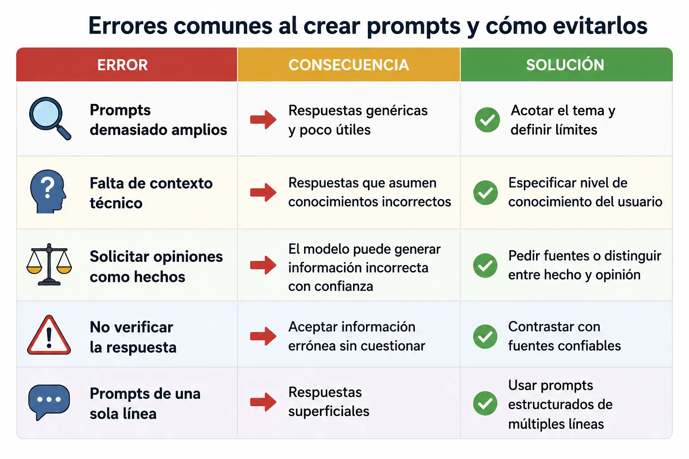
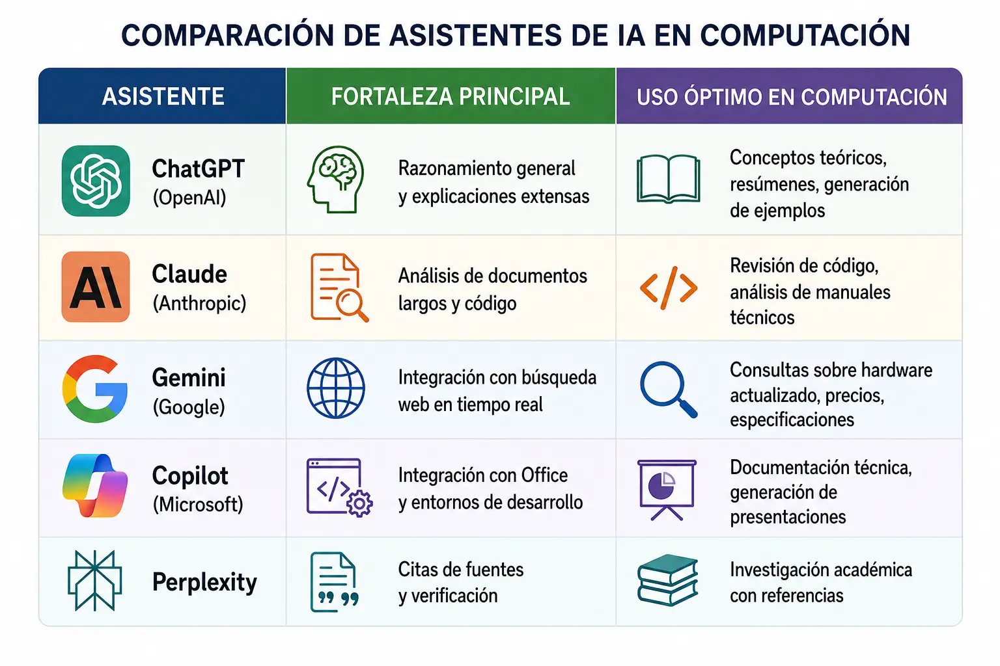

Inteligencia Artificial como Tutor Personal
La inteligencia artificial generativa ha cambiado mucho la manera en que usamos la tecnología. Actualmente, podemos utilizar asistentes de IA como una ayuda para estudiar, ya que pueden explicar temas difíciles, crear ejercicios, resumir textos, ayudar con códigos y resolver dudas sobre computadores, programas y etc.
Sin embargo, para obtener buenas respuestas es importante saber cómo hacer las preguntas. Un prompt es la instrucción o pregunta que una persona le escribe a una inteligencia artificial para decir lo que necesita. En cambio, si damos información clara y específica, la IA puede entender mejor lo que necesitamos y darnos una respuesta más útil.
Por eso, aprender a crear buenos prompts es una habilidad importante para los estudiantes.
El principio del contexto específico
Un buen prompt no consiste solamente en hacer una pregunta. Es mejor explicar qué necesitamos, dar un poco de contexto y decir cómo queremos recibir la respuesta.
Ejemplo de un prompt efectivo: "Actúa como un técnico de mantenimiento de hardware. Explica cómo realizar la limpieza del sistema de disipación de calor de una laptop, incluyendo las herramientas necesarias, las medidas de seguridad, cada cuánto se debe realizar el mantenimiento y las señales que pueden indicar un problema. Utiliza un lenguaje técnico, pero fácil de entender."
Técnicas para Crear Prompts Efectivos

Uso de Asistentes de Estudio Generativos

Detección de Texto Artificial: Mantenimiento de la Integridad Académica
¿Por qué es Importante?
La integridad académica es el pilar de cualquier formación técnica. Presentar trabajo generado por IA como propio constituye plagio y fraude académico. Sin embargo, la detección no se trata solo de "atrapar" a quien hace trampa: se trata de desarrollar criterio crítico para evaluar la información que se consume y produce.
- Generar información técnicamente incorrecta: en algunas ocasiones puede dar respuestas equivocadas, aunque las presente con mucha seguridad. A estos errores se les suele llamar "alucinaciones" de la IA.
- Producir textos que parecen verdaderos: puede escribir de una forma muy segura y profesional, pero eso no significa que toda la información tenga fundamentos o sea correcta.
- Crear citas bibliográficas falsas: algunas veces puede mencionar libros, autores, páginas o referencias que realmente no existen. Por eso, las fuentes siempre deben verificarse.
- Explicar conceptos de manera superficial: puede dar una respuesta que parece completa, pero que realmente no profundiza lo suficiente en el tema.